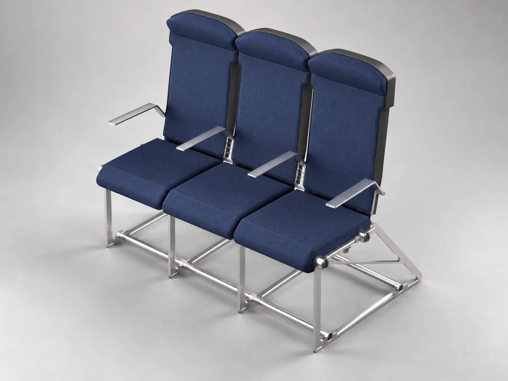
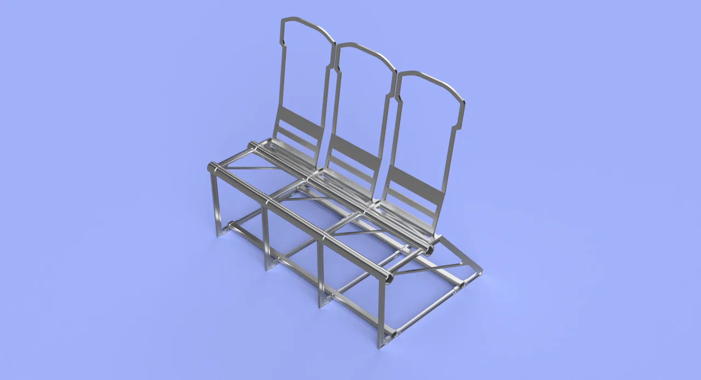
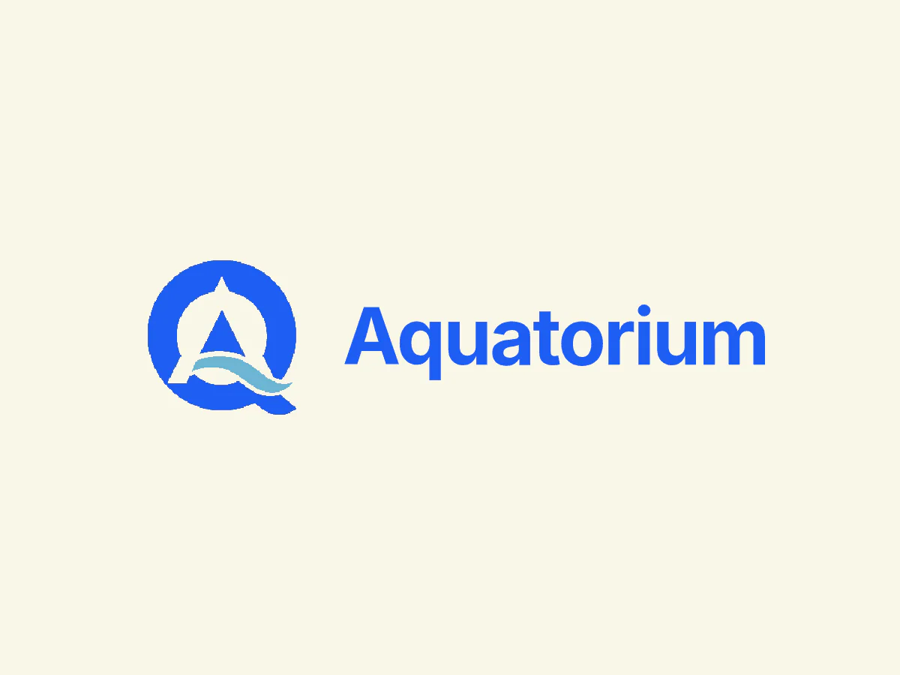

零部件支架 · 主框架有限元分析 · 相机支架
电子原型 · 组装与测试

开发中
AI 辅助 CAD 技能 · 设计意图与核查

概念效果图 · 报告中的 Vizcom 图像
SUV 侧面轮廓设计 · 电池冷却 CFD


概念效果图 · 基于项目 CAD 经 AI 优化
模块化座椅概念 · CAD 与 Eco Audit

个人概念探索 · 团队产品开发
进行中的项目
记录个人制作与工具开发的每一步，包括已完成的工作、正在推进的内容和下一步计划。